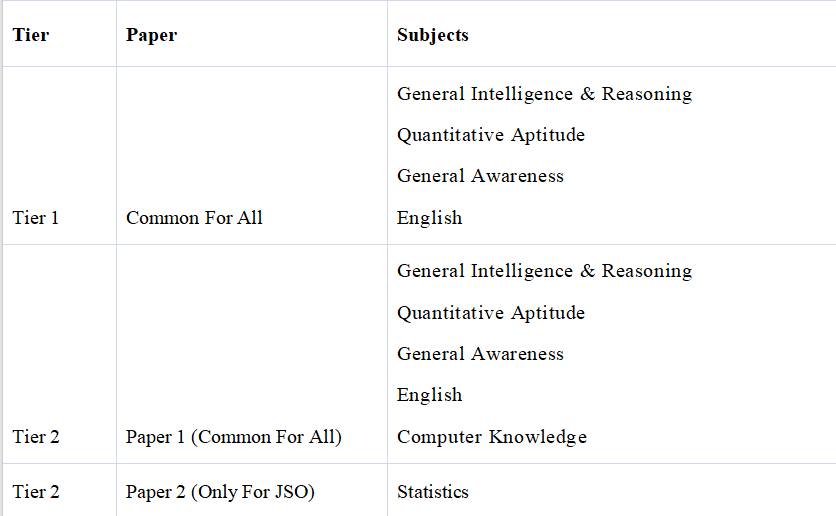
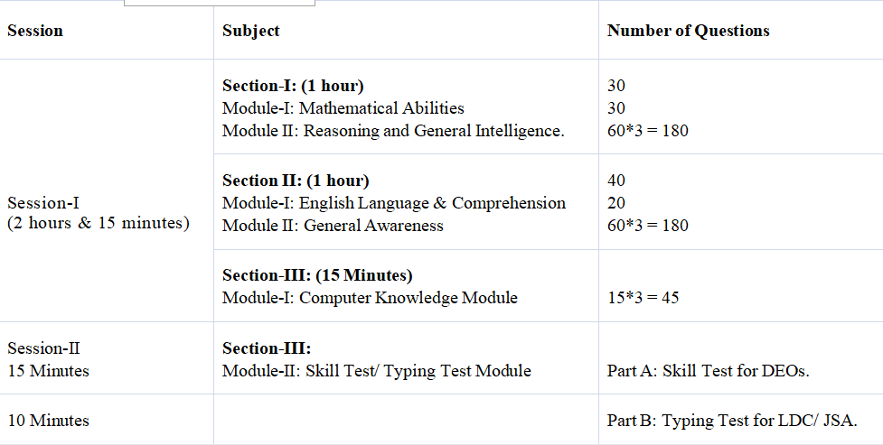

- The SSC CGL Syllabus 2026 includes General Intelligence & Reasoning, Quantitative Aptitude, General Awareness, and English in Tier 1 and Tier 2 Paper 1, along with Computer Knowledge; Tier 2 Paper 2 includes Statistics for JSO candidates only. Candidate should understand the detailed syllabus as the SSC CGL .
- Exam Date 2026 is likely to be in May - Jun 2026. The CGL Syllabus for Tier 2 primarily consists of subjects such as:

